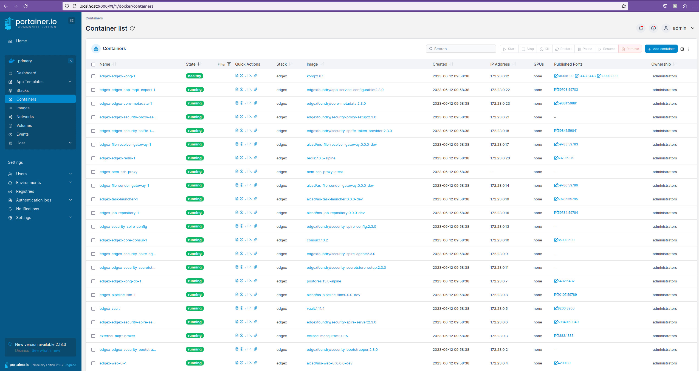

Build and Deploy¶
Build Containers¶
-
Use one of the command line options below to build:
Build Type Build Command When To Use General Build make <docker-target>The system resources are unknown. Fast Build make -j<num of threads> <docker-target>The flag -j represents the number of jobs in a build. The optimal integer for j depends on the system resources (e.g., cores) and configuration. Where
<docker-target>can be one of the following:Docker Target Description docker builds all custom docker containers to run in a single system setup docker-build-gateway builds gateway custom docker containers docker-build-oem builds oem specific custom docker containers - this requires the SSH Configuration to be complete before the containers can be built Warning
Leave plenty of time for this step to complete, up to 30-40 minutes. Console output may appear to hang while conducting parts of the build process using intermediate containers. Red text is not necessarily concerning, so allow the process to finish.
-
For a two system setup, it is necessary to update
<OEM_IP_ADDRESS>with the appropriate IP address of the OEM system in the docker-compose-edgex-spiffe-spire.yml file. To obtain the IP address usehostname -Ion Linux oripconfigon Windows.Note
For an OEM system running in WSL, use the IP address of the Windows system.
Run the Services¶
The table below describes the different run options available.
-
Run the docker images for the gateway (or all on one, if desired). Choose one of the run targets below (depends on the pipeline type and number of systems):
Note
It is recommended to use the simulated pipeline for a trial setup. Using the simulated pipeline on a single system is the simplest configuration.
Pipeline Option Run Target Description Number of Containers Simulated Pipeline (Gateway) make run-gateway-simRun the AiCSD microservices with a set of simulated pipelines 22 Simulated Pipeline (single system) make run-simRun the AiCSD microservices with a set of simulated pipelines 21 Geti Pipeline (Gateway) make run-gateway-getiRun the AiCSD microservices with Geti pipelines for the Gateway System 23 Geti Pipeline (single system) make run-getiRun the AiCSD microservices with Geti pipelines 22 OpenVino Model Server (Gateway or single) make run-ovmsRun the OVMS container 1 Note
The optional
GATEWAY_IP_ADDR=192.168.X.Xparameter can be added to the make command in order for the web UI to be accessed fom an external system. This command would readmake <run-option> GATEWAY_IP_ADDR=192.168.X.X. To get the IP address of a Linux system runhostname -I.Success
For two system, verify that the logs of the
edgex-oem-ssh-proxycontainer say+ scp -p -o 'StrictHostKeyChecking=no' -o 'UserKnownHostsFile=/dev/null' -P 2223 /srv/spiffe/remote-agent/agent.key '<OEM_IP_ADDRESS>:/srv/spiffe/remote-agent/agent.key' scp: Connection closed ssh: Could not resolve hostname <oem_ip_address>: Try againSuccess
For an AiCSD microservice, the logs should look something like this task-launcher sample log:
level=INFO ts=2023-06-12T16:58:55.042728315Z app=app-task-launcher source=server.go:162 msg="Starting HTTP Web Server on address task-launcher:59785" level=INFO ts=2023-06-12T16:58:55.043443755Z app=app-task-launcher source=messaging.go:104 msg="Subscribing to topic(s): 'NONE' @ redis://edgex-redis:6379" level=INFO ts=2023-06-12T16:58:55.043454019Z app=app-task-launcher source=messaging.go:113 msg="Publishing to topic: '{publish-topic}' @ redis://edgex-redis:6379" level=INFO ts=2023-06-12T16:58:55.04346657Z app=app-task-launcher source=service.go:202 msg="StoreAndForward disabled. Not running retry loop." level=INFO ts=2023-06-12T16:58:55.043471401Z app=app-task-launcher source=service.go:205 msg="Started the task launcher microservice" level=INFO ts=2023-06-12T16:58:55.043518377Z app=app-task-launcher source=messaging.go:125 msg="Waiting for messages from the MessageBus on the 'NONE' topic" level=DEBUG ts=2023-06-12T17:28:54.018134531Z app=app-task-launcher source=secrets.go:345 msg="token is successfully renewed" -
For a two system setup, on the Gateway, add the server entries for the OEM side to authorize the services running on the OEM side.
$ make add-ssh-server-entryNote
This only needs to be run the first time the Gateway services are started or after the volumes have been cleaned.
-
For a two system setup, start the OEM services on the OEM system. (This should start 6 containers.)
$ make run-oemWarning
The OEM system must be started within one hour of starting the Gateway system. Failure to do so will result in the services not connecting or functioning properly.
Success
The
edgex-remote-spire-agentlogs should have lines that look like:An AiCSD microservice (ietime="2023-06-05T22:20:35Z" level=debug msg="Fetched X.509 SVID" count=1 method=FetchX509SVID pid=3559771 registered=true service=WorkloadAPI spiffe_id="spiffe://edgexfoundry.org/service/app-file-receiver-oem" subsystem_name=endpoints ttl=3597.506151713file-receiver-oem) should look like:level=INFO ts=2023-06-07T15:31:23.916977876Z app=app-file-receiver-gateway source=server.go:162 msg="Starting HTTP Web Server on address file-receiver-gateway:59783" -
Verify the correct number of containers are running using
docker psormake run-portainer. If using Portainer, open Portainer in a browser. Here's an example screenshot of all the gateway services running in Portainer (high-level check that the stack is in a green/running state):
Next Up¶
For Basic Workflow with Simulated Pipelines, no pipeline configuration is needed.
Now, continue to the Basic Workflow page.
Advanced Workflows¶
The following are Advanced Workflows for building custom pipelines.
Note
It is recommended to first get familiarized using the Basic Workflow with Simulated Pipelines before attempting the Advanced Workflows.
| Run Option | Pipeline Configuration Instructions |
|---|---|
| Custom Pipeline with OVMS & BentoML | Image Classification Demo |
| Geti Pipeline | Use Geti Pipelines |
Note
To create custom pipelines that interfaces with AiCSD, refer to the Pipeline Creation section.
INTEL CONFIDENTIAL: See License.